Journals
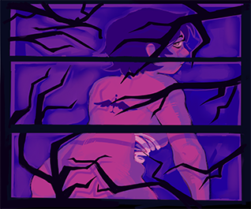
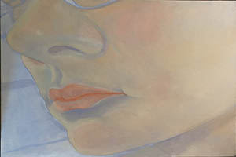
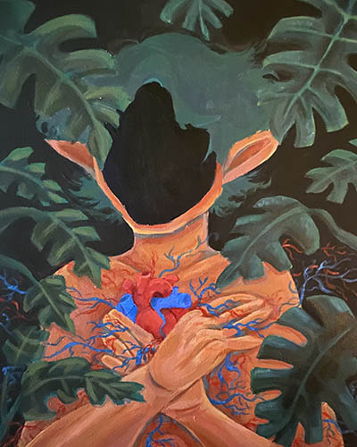
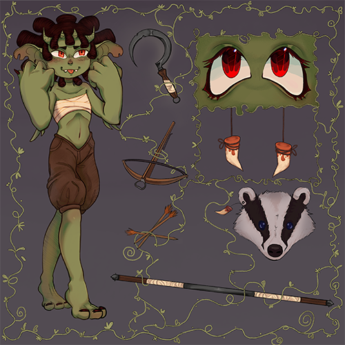
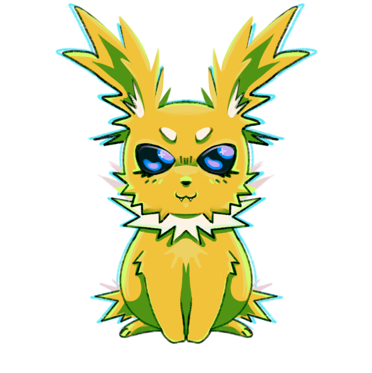
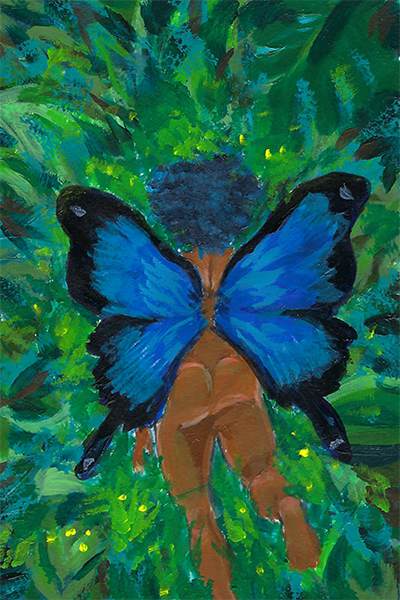
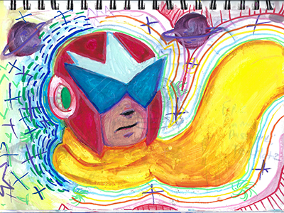
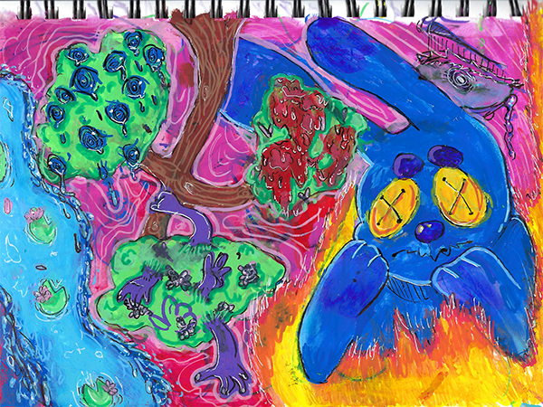
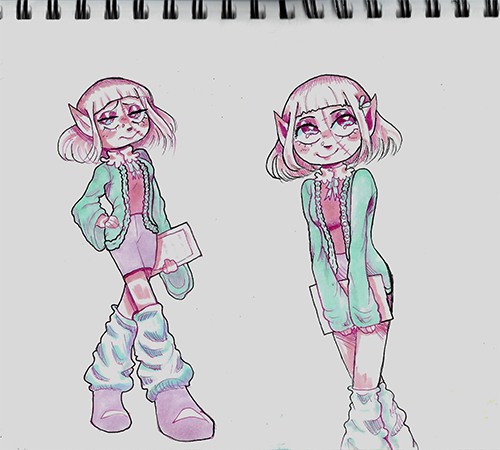
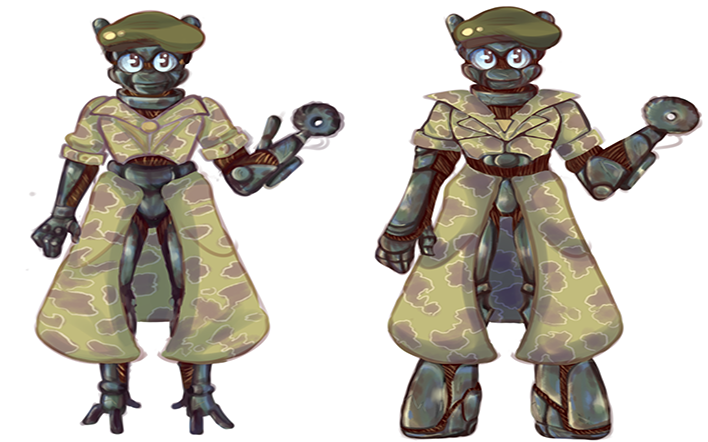
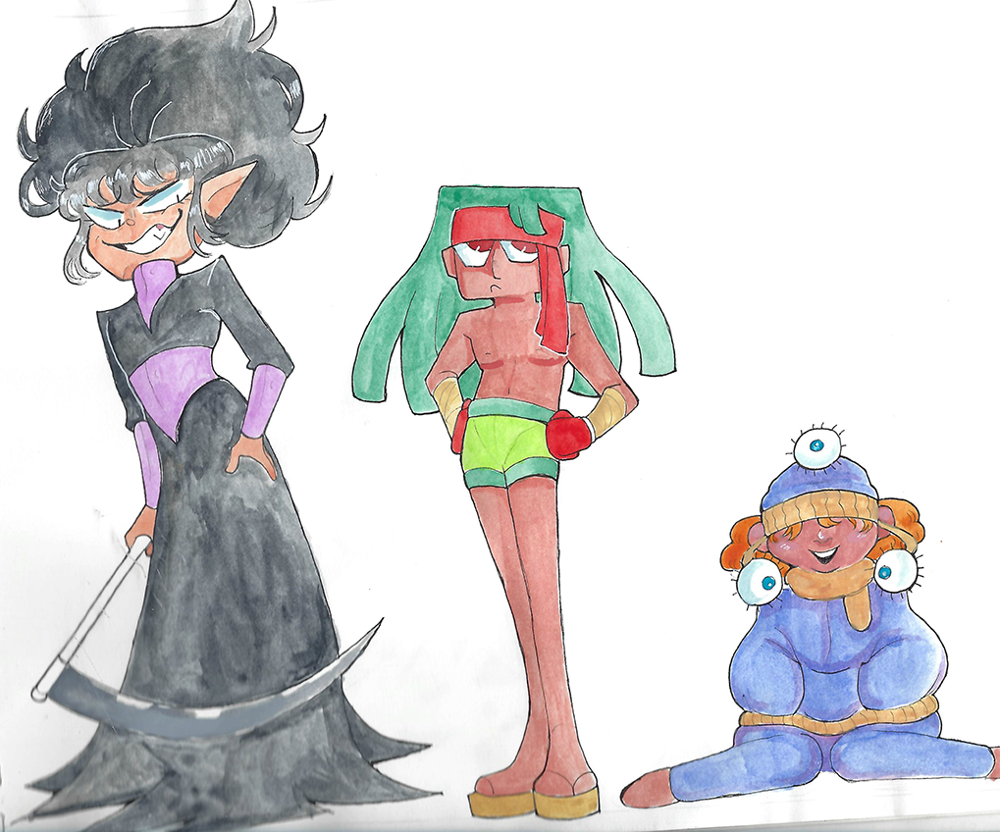
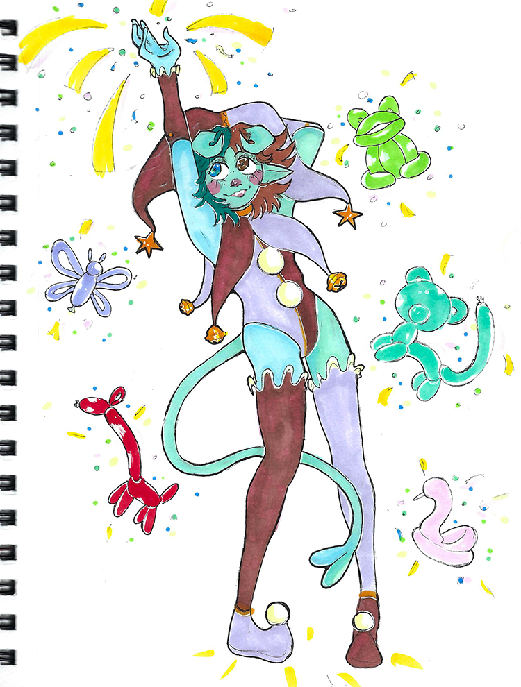
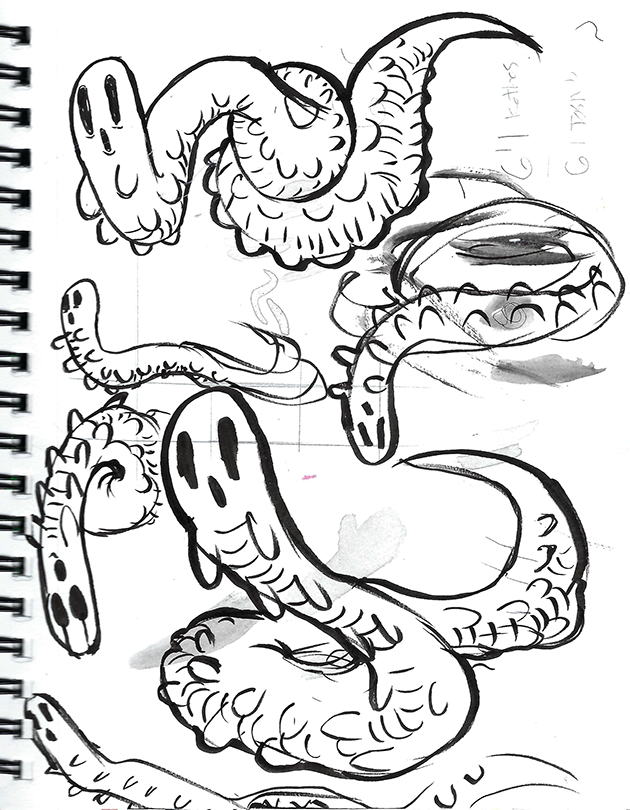
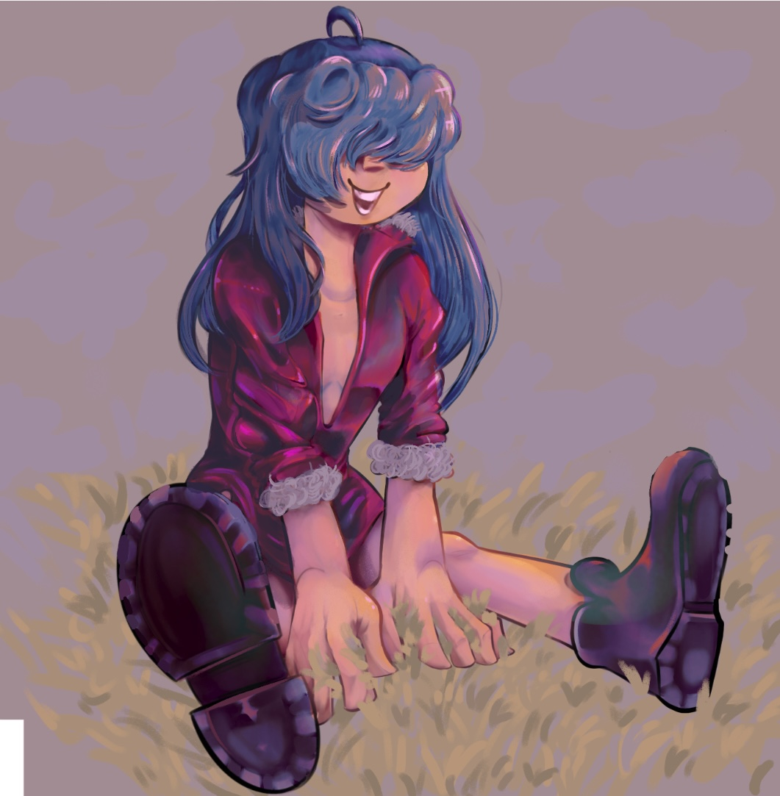
I've been drawing for long time on and off. Ever since I was a kid, the first things I ever drew were rats and foxes on the back of homework assignments. I still have a long way to go in my art journey but I'm happy to look back and see all the progress I've made over the years.